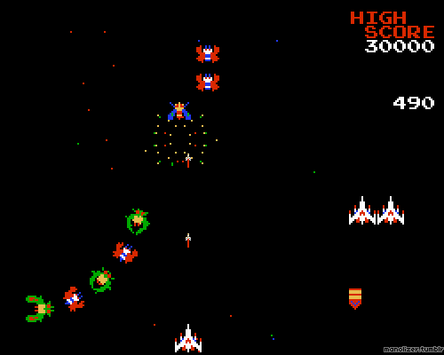

Most video games rely on collision detection algorithms in order to implement certain
essential gameplay mechanics. Regardless of the chosen algorithm, implementation problems always arise as
scale increases. In many video games, large environments can contain thousands of objects that
the player can interact with. Currently the best way to limit computational cost is to decrease the
number of times the algorithm is run. In order to do this, developers can utilize quadtrees:
a data structure that eliminates checks for impropable collisions. Scroll to explore an illustrated
breakdown of quadtrees and their use.
In addition to aiding collision detection, quadtrees have a variety of other use cases. They are used
in image processing (such as compressing images), spatial indexing, and mesh generation to assist
rendering physical simulations such as fluid dynamics.

Small Scale Detection
Game engines must be able to update a game's state depending on object interaction (or lack thereof), requiring frequent checks for collisions. In this case we see two objects that don't collide. We use our detection algorithm (shown here as a line drawn between objects) to verify this.
Now, we see two objects that do collide. In this case detection is trivial, as we're only dealing with two objects. Checking whether a collision occurred just requires picking a point and seeing if it intersects the other.
Large Scale Detection
When we have a large number of objects, checking for collisions using our current method becomes much more expensive. Users expect fluid gameplay free of constant delays. Although the detection algorithm may be completed quickly once pairs are found, performing this computation for all pairs of objects has a cost that increases exponentially with the number of objects.
Let's look at what happens
with
objects... (2-300)
Dividing Space to Build a Quadtree
How can we cut down on object
comparisons? Consider the probability that two objects
collide. This probability is not uniform between all objects - some
have a much lower chance of colliding than others. The use of quadtrees
relies on a simple intuition: objects that are near one another are more likely
to have collided. To check objects against their neighbors, we first have to
figure out which objects are close to each other.
In order to create our tree, we recursively divide our 2D space into equally
sized quadrants, until each quadrant contains one object.
Visualizing the Tree
After completing the partitioning step, we are ready to transform the initial 2D space into
a quadtree. Each rectangle in the graph above becomes a node in the tree, with every node having at most
four children. A child can either represent another inner rectangle, or a single point. In the case of
an inner rectangle, this node will have children of its own too.
The tree is built by recursively looking at the largest rectangle first, and then each of
the four quadrants inside of it. Once you
reach a rectangle that has no more inner rectangles, the points that lie here are leaves in the tree.
Building A Tree of Your Own
Click inside the space below to create your own arrangement of points. Rectangles representing the
quadtree partitions will be automatically drawn around a point to show how data is stored in the tree.
Note: Not all points need a new partition allocated for them!
As long as a point is the only one in its rectangle, no update is necessary.